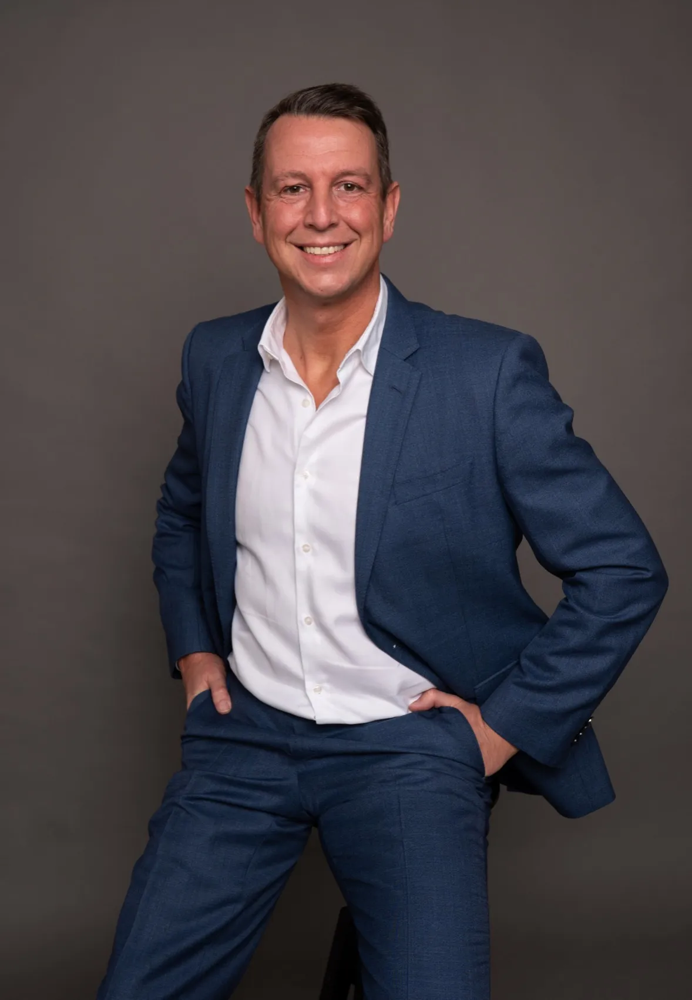

All five are built only from the brand system: Deep Green #143318, Detox Green #ccfe06, Soft Ivory #fefdf2, Formula Condensed for display, Inter for body, and the pill/arch shape language. Every one uses the clean studio plate rather than the pre-composited image, and builds its decoration in CSS so nothing is baked into a PNG.
Same bones as the live hero, but the gradient is the only background (the book reserves the logo pattern for large merch), the portrait is the clean plate, and a lime hairline plus a deep-green vignette make the arch read as a deliberate frame rather than a grey rectangle dropped on green. The lowest-risk change and the quickest to ship.
We help scale-ups cleanse the systems clogged by meetings nobody needs, reports nobody reads and decisions nobody takes — so time flows back into growing the company.

Uses the pattern the book actually assigns to the website (p.38) as the hero ground, drifting slowly sideways behind a Deep Green scrim. “Flush the pipelines” stops being a line in the ticker and becomes the background itself. The portrait sits in a tilted card with the lime tag strip across its base.
Meetings nobody needs. Reports nobody reads. Decisions nobody takes. We clear the blockage in your operating system so the company can move again.
Closest in spirit to his existing LinkedIn lockup: flat Detox Green, Deep Green display type at full volume, no gradient. He stays in natural colour inside the arch — the contrast against the lime comes from the Deep Green backdrop behind him, not from recolouring his face. The Deep Green tape strip carries the positioning line.
Fewer meetings. Fewer reports. Faster decisions.
Taken from Brand assets/Brand direction/Cards for the website.png, recoloured from the exploratory violet into the official palette and rebuilt in CSS. The tape, the corner radii and the type now stay crisp at any size and can be edited without going back to a designer. The front card is Deep Green with the portrait in natural colour; the lime is held back for the tape and the buttons. Light ivory ground, so it reads as the friendlier, more premium option.
We help scale-ups cleanse the systems clogged by meetings nobody needs, reports nobody reads and decisions nobody takes — so time flows back into growing the company.
What the current image was reaching for, done without the image. The three nouns are real text in Formula Condensed and the lime rules draw themselves across on load — so there are no grey placeholder bars, no overrunning strikes, no comic speed lines, and the words can be rewritten per campaign. Strongest message clarity of the five.
We cleanse the systems underneath, so time flows back into growing the company.